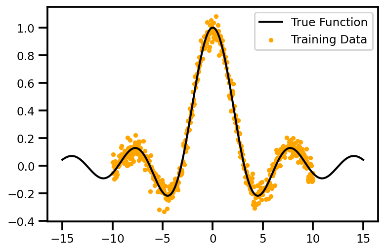
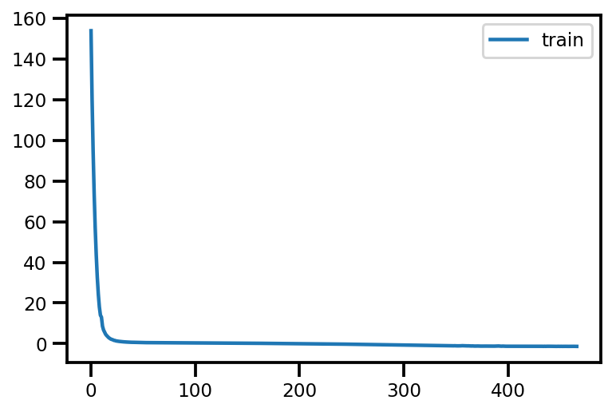
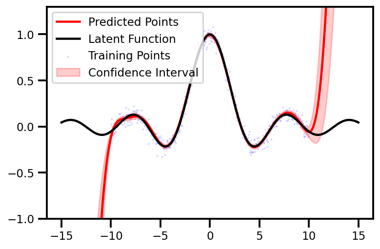
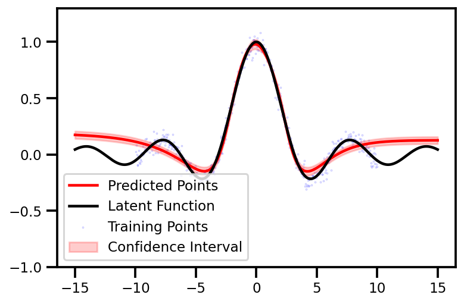

Master Class in Regression and Uncertainty with Tensorflow Probability
Contents

Master Class in Regression and Uncertainty with Tensorflow Probability#
In this notebook, I will exploring the new tensorflow 2.0, tensorflow probability and edward2. We have come a long way
Resources#
BNN
A regression masterclass with Aboleth - docs
Bayesian Regressions with MCMC or Variational Bayes using TensorFlow Probability - blog
Regression with Probabilistic Layers in TensorFlow Probability - blog | Notebook
Variational Inference for Bayesian Neural Networks - Blog
TF2
Bayesian Gaussian Mixture Modeling with SVI (06-2019) - blog
Trip Duration Prediction using Bayesian NN and TF2.0 (06-2019) - Blog
Keras
A Tutorial on Variational Autoencoders with Concise Keras Implementation - blog
Building VAE in TensorFlow - blog
# Install TensorFlow
!pip install tensorflow-probability gpflux loguru
Requirement already satisfied: tensorflow-probability in /usr/local/lib/python3.7/dist-packages (0.12.1)
Collecting gpflux
?25l Downloading https://files.pythonhosted.org/packages/a4/82/536ac1e5f621431461691c11c5ffa34eede1fdc085445e165b41b07b3fca/gpflux-0.1.0-py3-none-any.whl (64kB)
|████████████████████████████████| 71kB 8.5MB/s
?25hCollecting loguru
?25l Downloading https://files.pythonhosted.org/packages/6d/48/0a7d5847e3de329f1d0134baf707b689700b53bd3066a5a8cfd94b3c9fc8/loguru-0.5.3-py3-none-any.whl (57kB)
|████████████████████████████████| 61kB 10.1MB/s
?25hRequirement already satisfied: six>=1.10.0 in /usr/local/lib/python3.7/dist-packages (from tensorflow-probability) (1.15.0)
Requirement already satisfied: numpy>=1.13.3 in /usr/local/lib/python3.7/dist-packages (from tensorflow-probability) (1.19.5)
Requirement already satisfied: decorator in /usr/local/lib/python3.7/dist-packages (from tensorflow-probability) (4.4.2)
Requirement already satisfied: cloudpickle>=1.3 in /usr/local/lib/python3.7/dist-packages (from tensorflow-probability) (1.3.0)
Requirement already satisfied: dm-tree in /usr/local/lib/python3.7/dist-packages (from tensorflow-probability) (0.1.6)
Requirement already satisfied: gast>=0.3.2 in /usr/local/lib/python3.7/dist-packages (from tensorflow-probability) (0.4.0)
Requirement already satisfied: tensorflow>=2.4.0 in /usr/local/lib/python3.7/dist-packages (from gpflux) (2.5.0)
Requirement already satisfied: scipy in /usr/local/lib/python3.7/dist-packages (from gpflux) (1.4.1)
Collecting gpflow>=2.1
?25l Downloading https://files.pythonhosted.org/packages/55/25/f3d0b5a7bea6c371ddbce6f2fb17b668d2782379be9c70cc40d2f063b67c/gpflow-2.2.1-py3-none-any.whl (271kB)
|████████████████████████████████| 276kB 25.1MB/s
?25hRequirement already satisfied: typing-extensions~=3.7.4 in /usr/local/lib/python3.7/dist-packages (from tensorflow>=2.4.0->gpflux) (3.7.4.3)
Requirement already satisfied: grpcio~=1.34.0 in /usr/local/lib/python3.7/dist-packages (from tensorflow>=2.4.0->gpflux) (1.34.1)
Requirement already satisfied: wheel~=0.35 in /usr/local/lib/python3.7/dist-packages (from tensorflow>=2.4.0->gpflux) (0.36.2)
Requirement already satisfied: tensorflow-estimator<2.6.0,>=2.5.0rc0 in /usr/local/lib/python3.7/dist-packages (from tensorflow>=2.4.0->gpflux) (2.5.0)
Requirement already satisfied: astunparse~=1.6.3 in /usr/local/lib/python3.7/dist-packages (from tensorflow>=2.4.0->gpflux) (1.6.3)
Requirement already satisfied: wrapt~=1.12.1 in /usr/local/lib/python3.7/dist-packages (from tensorflow>=2.4.0->gpflux) (1.12.1)
Requirement already satisfied: absl-py~=0.10 in /usr/local/lib/python3.7/dist-packages (from tensorflow>=2.4.0->gpflux) (0.12.0)
Requirement already satisfied: termcolor~=1.1.0 in /usr/local/lib/python3.7/dist-packages (from tensorflow>=2.4.0->gpflux) (1.1.0)
Requirement already satisfied: opt-einsum~=3.3.0 in /usr/local/lib/python3.7/dist-packages (from tensorflow>=2.4.0->gpflux) (3.3.0)
Requirement already satisfied: keras-preprocessing~=1.1.2 in /usr/local/lib/python3.7/dist-packages (from tensorflow>=2.4.0->gpflux) (1.1.2)
Requirement already satisfied: protobuf>=3.9.2 in /usr/local/lib/python3.7/dist-packages (from tensorflow>=2.4.0->gpflux) (3.12.4)
Requirement already satisfied: tensorboard~=2.5 in /usr/local/lib/python3.7/dist-packages (from tensorflow>=2.4.0->gpflux) (2.5.0)
Requirement already satisfied: google-pasta~=0.2 in /usr/local/lib/python3.7/dist-packages (from tensorflow>=2.4.0->gpflux) (0.2.0)
Requirement already satisfied: h5py~=3.1.0 in /usr/local/lib/python3.7/dist-packages (from tensorflow>=2.4.0->gpflux) (3.1.0)
Requirement already satisfied: keras-nightly~=2.5.0.dev in /usr/local/lib/python3.7/dist-packages (from tensorflow>=2.4.0->gpflux) (2.5.0.dev2021032900)
Requirement already satisfied: flatbuffers~=1.12.0 in /usr/local/lib/python3.7/dist-packages (from tensorflow>=2.4.0->gpflux) (1.12)
Collecting deprecated
Downloading https://files.pythonhosted.org/packages/fb/73/994edfcba74443146c84b91921fcc269374354118d4f452fb0c54c1cbb12/Deprecated-1.2.12-py2.py3-none-any.whl
Collecting multipledispatch>=0.6
Downloading https://files.pythonhosted.org/packages/89/79/429ecef45fd5e4504f7474d4c3c3c4668c267be3370e4c2fd33e61506833/multipledispatch-0.6.0-py3-none-any.whl
Requirement already satisfied: tabulate in /usr/local/lib/python3.7/dist-packages (from gpflow>=2.1->gpflux) (0.8.9)
Requirement already satisfied: packaging in /usr/local/lib/python3.7/dist-packages (from gpflow>=2.1->gpflux) (20.9)
Requirement already satisfied: setuptools>=41.0.0 in /usr/local/lib/python3.7/dist-packages (from gpflow>=2.1->gpflux) (57.0.0)
Collecting dataclasses
Downloading https://files.pythonhosted.org/packages/26/2f/1095cdc2868052dd1e64520f7c0d5c8c550ad297e944e641dbf1ffbb9a5d/dataclasses-0.6-py3-none-any.whl
Requirement already satisfied: requests<3,>=2.21.0 in /usr/local/lib/python3.7/dist-packages (from tensorboard~=2.5->tensorflow>=2.4.0->gpflux) (2.23.0)
Requirement already satisfied: tensorboard-data-server<0.7.0,>=0.6.0 in /usr/local/lib/python3.7/dist-packages (from tensorboard~=2.5->tensorflow>=2.4.0->gpflux) (0.6.1)
Requirement already satisfied: werkzeug>=0.11.15 in /usr/local/lib/python3.7/dist-packages (from tensorboard~=2.5->tensorflow>=2.4.0->gpflux) (1.0.1)
Requirement already satisfied: tensorboard-plugin-wit>=1.6.0 in /usr/local/lib/python3.7/dist-packages (from tensorboard~=2.5->tensorflow>=2.4.0->gpflux) (1.8.0)
Requirement already satisfied: markdown>=2.6.8 in /usr/local/lib/python3.7/dist-packages (from tensorboard~=2.5->tensorflow>=2.4.0->gpflux) (3.3.4)
Requirement already satisfied: google-auth-oauthlib<0.5,>=0.4.1 in /usr/local/lib/python3.7/dist-packages (from tensorboard~=2.5->tensorflow>=2.4.0->gpflux) (0.4.4)
Requirement already satisfied: google-auth<2,>=1.6.3 in /usr/local/lib/python3.7/dist-packages (from tensorboard~=2.5->tensorflow>=2.4.0->gpflux) (1.30.0)
Requirement already satisfied: cached-property; python_version < "3.8" in /usr/local/lib/python3.7/dist-packages (from h5py~=3.1.0->tensorflow>=2.4.0->gpflux) (1.5.2)
Requirement already satisfied: pyparsing>=2.0.2 in /usr/local/lib/python3.7/dist-packages (from packaging->gpflow>=2.1->gpflux) (2.4.7)
Requirement already satisfied: chardet<4,>=3.0.2 in /usr/local/lib/python3.7/dist-packages (from requests<3,>=2.21.0->tensorboard~=2.5->tensorflow>=2.4.0->gpflux) (3.0.4)
Requirement already satisfied: idna<3,>=2.5 in /usr/local/lib/python3.7/dist-packages (from requests<3,>=2.21.0->tensorboard~=2.5->tensorflow>=2.4.0->gpflux) (2.10)
Requirement already satisfied: urllib3!=1.25.0,!=1.25.1,<1.26,>=1.21.1 in /usr/local/lib/python3.7/dist-packages (from requests<3,>=2.21.0->tensorboard~=2.5->tensorflow>=2.4.0->gpflux) (1.24.3)
Requirement already satisfied: certifi>=2017.4.17 in /usr/local/lib/python3.7/dist-packages (from requests<3,>=2.21.0->tensorboard~=2.5->tensorflow>=2.4.0->gpflux) (2020.12.5)
Requirement already satisfied: importlib-metadata; python_version < "3.8" in /usr/local/lib/python3.7/dist-packages (from markdown>=2.6.8->tensorboard~=2.5->tensorflow>=2.4.0->gpflux) (4.0.1)
Requirement already satisfied: requests-oauthlib>=0.7.0 in /usr/local/lib/python3.7/dist-packages (from google-auth-oauthlib<0.5,>=0.4.1->tensorboard~=2.5->tensorflow>=2.4.0->gpflux) (1.3.0)
Requirement already satisfied: rsa<5,>=3.1.4; python_version >= "3.6" in /usr/local/lib/python3.7/dist-packages (from google-auth<2,>=1.6.3->tensorboard~=2.5->tensorflow>=2.4.0->gpflux) (4.7.2)
Requirement already satisfied: cachetools<5.0,>=2.0.0 in /usr/local/lib/python3.7/dist-packages (from google-auth<2,>=1.6.3->tensorboard~=2.5->tensorflow>=2.4.0->gpflux) (4.2.2)
Requirement already satisfied: pyasn1-modules>=0.2.1 in /usr/local/lib/python3.7/dist-packages (from google-auth<2,>=1.6.3->tensorboard~=2.5->tensorflow>=2.4.0->gpflux) (0.2.8)
Requirement already satisfied: zipp>=0.5 in /usr/local/lib/python3.7/dist-packages (from importlib-metadata; python_version < "3.8"->markdown>=2.6.8->tensorboard~=2.5->tensorflow>=2.4.0->gpflux) (3.4.1)
Requirement already satisfied: oauthlib>=3.0.0 in /usr/local/lib/python3.7/dist-packages (from requests-oauthlib>=0.7.0->google-auth-oauthlib<0.5,>=0.4.1->tensorboard~=2.5->tensorflow>=2.4.0->gpflux) (3.1.0)
Requirement already satisfied: pyasn1>=0.1.3 in /usr/local/lib/python3.7/dist-packages (from rsa<5,>=3.1.4; python_version >= "3.6"->google-auth<2,>=1.6.3->tensorboard~=2.5->tensorflow>=2.4.0->gpflux) (0.4.8)
Installing collected packages: deprecated, multipledispatch, dataclasses, gpflow, gpflux, loguru
Successfully installed dataclasses-0.6 deprecated-1.2.12 gpflow-2.2.1 gpflux-0.1.0 loguru-0.5.3 multipledispatch-0.6.0
#@title Import Packages
from pprint import pprint
import numpy as np
# TensorFlow Imports
import tensorflow as tf
# TensorFlow Probability Imports
import tensorflow_probability as tfp
tfd = tfp.distributions
# Keras Imports
# gpflow Imports
import gpflow
import gpflux
# GPFlow Imports
# NUMPY SETTINGS
import numpy as onp
onp.set_printoptions(precision=3, suppress=True)
# MATPLOTLIB Settings
import matplotlib as mpl
import matplotlib.pyplot as plt
%matplotlib inline
%config InlineBackend.figure_format = 'retina'
# SEABORN SETTINGS
import seaborn as sns
sns.set_context(context='talk',font_scale=0.7)
# sns.set(rc={'figure.figsize': (12, 9.)})
# sns.set_style("whitegrid")
# PANDAS SETTINGS
import pandas as pd
pd.set_option("display.max_rows", 120)
pd.set_option("display.max_columns", 120)
# LOGGING SETTINGS
import sys
import loguru
%load_ext autoreload
%autoreload 2
if tf.test.gpu_device_name() != '/device:GPU:0':
print('WARNING: GPU device not found.')
else:
print('SUCCESS: Found GPU: {}'.format(tf.test.gpu_device_name()))
SUCCESS: Found GPU: /device:GPU:0
Data#
import numpy as np
import matplotlib.pyplot as plt
def f(x, noise=0.05): return np.sin(x) / x + noise * np.random.randn(x.shape[0], x.shape[1])
ntrain, ntest, ntrue = 500, 500, 1_000
xtrain = np.linspace(-10, 10, ntrain)[:, None]
ytrain = f(xtrain)
xtest = np.linspace(-15, 15, ntest)[:, None]
ytest = f(xtest, noise=0.0)
xtrue = np.linspace(-15, 15, ntrue)[:, None]
ytrue = f(xtrue, noise=0.0)
fig, ax = plt.subplots()
ax.scatter(xtrain, ytrain, s=10, color="orange", label="Training Data")
ax.plot(xtest, ytest, linewidth=2, color="black", label="True Function")
ax.legend()
plt.show()

Plot Functions#
def plot_results(ypred, stddevs=None, **kwargs):
fig, ax = plt.subplots()
ax.scatter(xtrain, ytrain, s=0.01, label='Training Points', color='blue')
ax.plot(xtest, ypred, label='Predicted Points', color='red')
ax.plot(xtrue, ytrue, label='Latent Function', color='black')
if stddevs is not None:
ax.fill_between(
xtest.squeeze(),
(ypred - 2 * stddevs).squeeze(),
(ypred + 2 * stddevs).squeeze(),
color='red', alpha=0.2,
label='Confidence Interval',
)
ax.legend()
ax.set(**kwargs)
plt.show()
return None
def plot_loss(history):
# plot training history
fig, ax = plt.subplots()
ax.plot(history.history['loss'], label='train')
plt.legend()
plt.show()
Gaussian Process (Standard)#
# For numeric stability, set the default floating-point dtype to float64
tf.keras.backend.set_floatx('float64')
num_inducing = 32
output_dim = ytrain.shape[1]
kernel = gpflow.kernels.SquaredExponential()
inducing_variable = gpflow.inducing_variables.InducingPoints(
np.linspace(xtrain.min(), xtrain.max(), num_inducing).reshape(-1, 1)
)
gp_layer = gpflux.layers.GPLayer(
kernel, inducing_variable, num_data=ntrain, num_latent_gps=output_dim
)
likelihood_layer = gpflux.layers.LikelihoodLayer(gpflow.likelihoods.Gaussian(0.1))
single_layer_dgp = gpflux.models.DeepGP([gp_layer], likelihood_layer)
model = single_layer_dgp.as_training_model()
model.compile(tf.optimizers.Adam(0.01))
rlr=tf.keras.callbacks.ReduceLROnPlateau("loss", factor=0.95, patience=3, min_lr=1e-6, verbose=0)
es = tf.keras.callbacks.EarlyStopping(monitor='loss', mode='min', patience=20)
history = model.fit(
{"inputs": xtrain, "targets": ytrain},
epochs=1_500,
verbose=0,
batch_size=32,
callbacks=[rlr, es]
)
plot_loss(history)

pred_model = single_layer_dgp.as_prediction_model()
out = pred_model(xtest)
mu = out.f_mean.numpy().squeeze()
var = np.sqrt(out.f_var.numpy().squeeze())
plot_results(mu, var, ylim=[-1.0, 1.3])

Deep GP (2-Layer)#
from gpflux.architectures import Config, build_constant_input_dim_deep_gp
from gpflux.models import DeepGP
num_layers = 2
num_inducing = 32
config = Config(
num_inducing=num_inducing, inner_layer_qsqrt_factor=1e-5, likelihood_noise_variance=1e-2, whiten=True
)
deep_gp: DeepGP = build_constant_input_dim_deep_gp(xtrain, num_layers=num_layers, config=config)
# From the `DeepGP` model we instantiate a training model which is a `tf.keras.Model`
training_model: tf.keras.Model = deep_gp.as_training_model()
# Following the Keras procedure we need to compile and pass a optimizer,
# before fitting the model to data
training_model.compile(optimizer=tf.optimizers.Adam(learning_rate=0.01))
callbacks = [
# Create callback that reduces the learning rate every time the ELBO plateaus
tf.keras.callbacks.ReduceLROnPlateau("loss", factor=0.95, patience=3, min_lr=1e-6, verbose=0),
# Create a callback that writes logs (e.g., hyperparameters, KLs, etc.) to TensorBoard
tf.keras.callbacks.EarlyStopping(monitor='loss', mode='min', patience=20),
# # Create a callback that writes logs (e.g., hyperparameters, KLs, etc.) to TensorBoard
# gpflux.callbacks.TensorBoard(),
# # Create a callback that saves the model's weights
# tf.keras.callbacks.ModelCheckpoint(filepath="ckpts/", save_weights_only=True, verbose=0),
]
history = training_model.fit(
{"inputs": xtrain, "targets": ytrain},
batch_size=32,
epochs=1_500,
callbacks=callbacks,
verbose=0,
)
pred_model = deep_gp.as_prediction_model()
out = pred_model(xtest)
mu = out.f_mean.numpy().squeeze()
var = np.sqrt(out.f_var.numpy().squeeze())
plot_results(mu, var, ylim=[-1.0, 1.3])

Deep Kernel Learning#
# For numeric stability, set the default floating-point dtype to float64
tf.keras.backend.set_floatx('float64')
num_inducing = 32#xtrain.shape[0]
output_dim = ytrain.shape[1]
kernel = gpflow.kernels.RationalQuadratic()
inducing_variable = gpflow.inducing_variables.InducingPoints(
np.linspace(xtrain.min(), xtrain.max(), num_inducing).reshape(-1, 1)
)
gp_layer = gpflux.layers.GPLayer(
kernel, inducing_variable, num_data=ntrain, num_latent_gps=output_dim,
)
likelihood = gpflow.likelihoods.Gaussian(0.001)
optimizer = tf.optimizers.Adam(0.01)
# So that Keras can track the likelihood variance, we need to provide the likelihood as part of a "dummy" layer:
likelihood_container = gpflux.layers.TrackableLayer()
likelihood_container.likelihood = likelihood
model = tf.keras.Sequential(
[
tf.keras.layers.InputLayer(1),
tf.keras.layers.Dense(64, activation="sigmoid"),
tf.keras.layers.Dense(64, activation="sigmoid"),
tf.keras.layers.Dense(1, activation="linear"),
gp_layer,
likelihood_container, # no-op, for discovering trainable likelihood parameters
]
)
loss = gpflux.losses.LikelihoodLoss(likelihood)
model.compile(loss=loss, optimizer=optimizer)
callbacks = [
# Create callback that reduces the learning rate every time the ELBO plateaus
tf.keras.callbacks.ReduceLROnPlateau("loss", factor=0.95, patience=3, min_lr=1e-6, verbose=0),
# Create a callback that writes logs (e.g., hyperparameters, KLs, etc.) to TensorBoard
tf.keras.callbacks.EarlyStopping(monitor='loss', mode='min', patience=20),
# # Create a callback that writes logs (e.g., hyperparameters, KLs, etc.) to TensorBoard
# gpflux.callbacks.TensorBoard(),
# # Create a callback that saves the model's weights
# tf.keras.callbacks.ModelCheckpoint(filepath="ckpts/", save_weights_only=True, verbose=0),
]
history = model.fit(
xtrain, ytrain,
batch_size=64,
epochs=2_500,
callbacks=callbacks,
verbose=0,
)
out = model(xtest)
mu = out.mean().numpy().squeeze()
var = out.stddev().numpy().squeeze()
plot_results(mu, var, ylim=[-1.0, 1.3])
